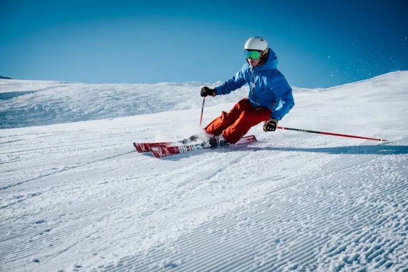

Judith PELLE-PATHE
Salut, je m’appelle Judith. J’ai 17 ans et je suis étudiante en première année à l’ESSEC.J'aime la literature et les animeaux !
Ma startupJe suis originaire de Haute-Savoie où j'ai grandi jusqu'à mes 16 ans.
J'ai une affection particulière pour cette région, les paysages, les secrets et tous les souvenirs qu'elle renferme.
Je ne suis pas trop fan de sport exception faîte du ski. 
Je pratique les sports d’hivers depuis que j’ai 4 ans.
J’aime les animaux et particulièrement mon chat Twite qui fête bientôt ses 2 ans.
je suis une passionnée de lecture. Je lis surtout des classiques.
Mes romans préférés sont Le comte de Monte Cristo, A.D et La fabrique de miracles, J.R D.